Unpack the section_02.tgz with the command
gunzip -c section_02.tgz | tar xvf -
This will create the directory Section_02 with subdirectories Section_02/Forward and Section_02/Processing.
To run the processing scripts, go to the Section_02 directions, e.g., cd Section_02. The following discusses what is done in each subdirectory. Normally one would enter Forward first and run the DOIT there, and then enter the directory Processing and run the scripts there.
The shell script DOIT creates a synthetic data set for a given network and epicenter whose dource parameters are defined. To make the data set as reasliztic as possible, the waveforms are named in the NNSSSCCCLL.SAC style of the USGS CWBquery format, have a realistic time stamp, and appropriate component orientations. These represent the deconvolved, rotated time series with units of ground velocity in m/s.
This script creates the synthetics for a specified source mechanism.
NOTE: The script requires the existence of the precomputed teleseismic Green's functions locate in the disk directory $dollar;{GREENDIR}/AK135.TEL, where the environment parameter GREENDIR is the path to the top level of the Green's function direcotries. If this does not exist, the CPS Tutorial Teleseismic and Regional Green's Functions NOV 19, 2008 will show how to compute them.
If you do not have the Green's functions, you can use the NNSSSCCCLL.SAC files in the directorty to test the detection algorithem with out running the DOIT script.
The DOIT script uses Green's functions generated for arc distances from 30° to 95°. The synthetics provided
correpond to a source at latitude 0° and longitude 0° with a depth of 10km in the AK135 continental model, an prigin time of
January 25, 2025 01:02:30.456 UTC, Mw=5.0 from a dislocation source with strike = 0°, rake = 0° and dipa = 80°.
The distribution of stations and the epicenter are whown in the next figure.
| 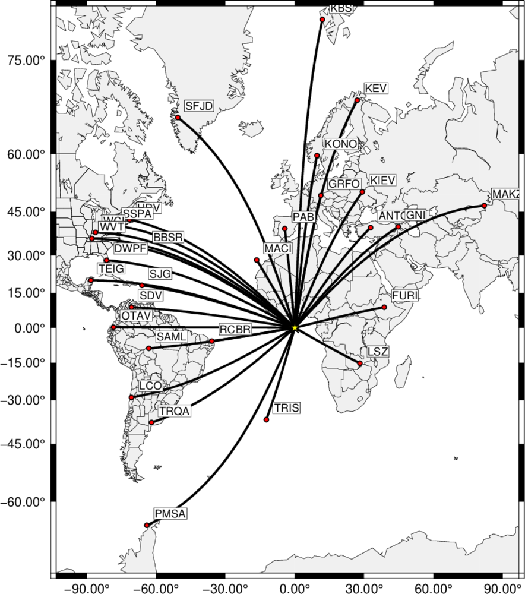 Msp showing ray paths from the epicenter to the stations |
| Z component | R component | T component |
|---|---|---|
| 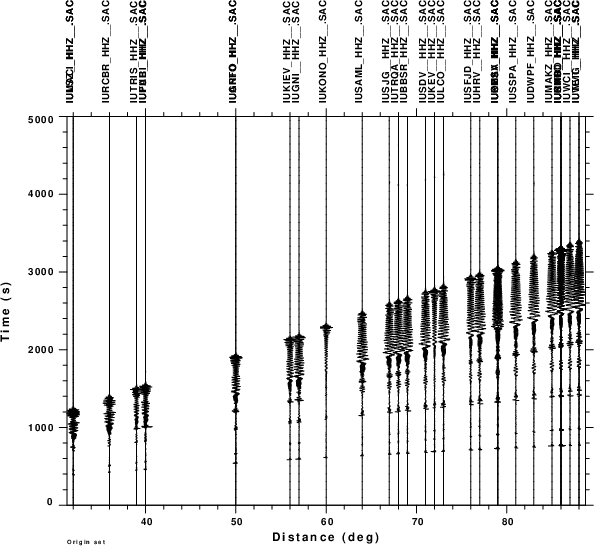 | 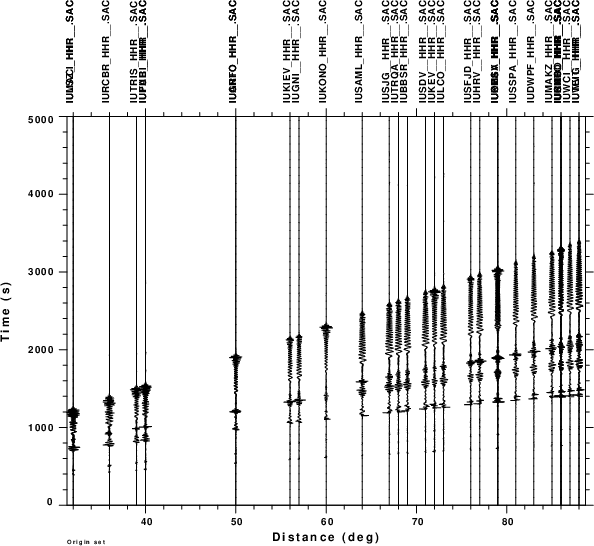 | 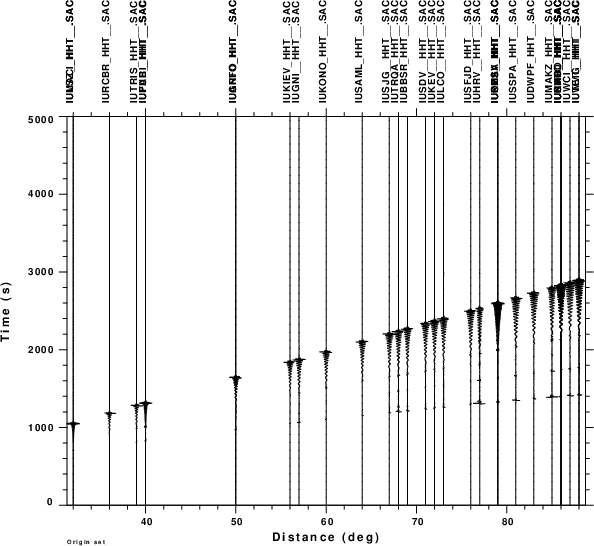 |
FINAL NOTE:. Since the Green's functions were computed at increments of 1°, there will be some time differences between the expected and synthetic phse arrival times to a given station.
This directory initially consists of the following scripts and FORTRAN source code for saccompress.f. Note: The shell scripts are well commented to indicate what is actually being done.
This is the top level command that assumes an origin time and searched through possible source locations. The observed waveforms at the stations are obtained, and cut within a specified group velocity window. The cut signals are then assumed to be findamental mode surface waves and are then compressed back to the source by usng the path dependent dispersion. When all stations are compressed, the envelope is formed and the envelopes are stacked. The stack is corrected for the number of stations/traces used.
The sac formated files of the final stacked envelopes will have names as END_latitude_longitude.stk
This is called from within DOSEARCH
Given the postulated source location and the station coordinates, determine the effective group and pahse velocities for the path. This can be done by global wave tracing, or here by copying the disepersion for where is was obtained for this model.
This is called from within DOSEARCH
Given the recording at a station, the trace is cut according to a group velocity window to isolate the fundamental mode surface wave (If not done, there might be slightly different compression results).
This script differs from DOSEARCH in that only one trial epicenter is considered, e.g., latitude=0°, longitude 0°, and no stacking of the envelopes is performed. The graphics created illustrate the original data, the cut window, the compression and the forming of the envelope. It calls the shell script DOSHOW.
This creates the following four figures, which are the observed waveforms, the windowed waveforms, the compressed waveforms
and the envelopes of the compressed waveform (with the maximum peak the same size on the plot), and finally the envelopes in a true amplitude section. The reason that the envelopes of the absolute amplitude plot do not have the amplitude may be due to radiation pattern and the anelastic attenuation in the synthetic model. Finally the envelopes are stacked and divided by the number of
traces.
| Observed ground velocities | Windowed ground velocities | Compressed ground velocities |
|---|---|---|
| 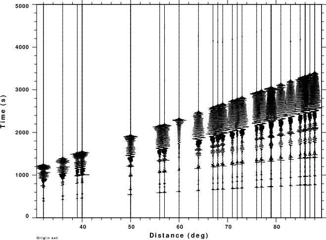 | 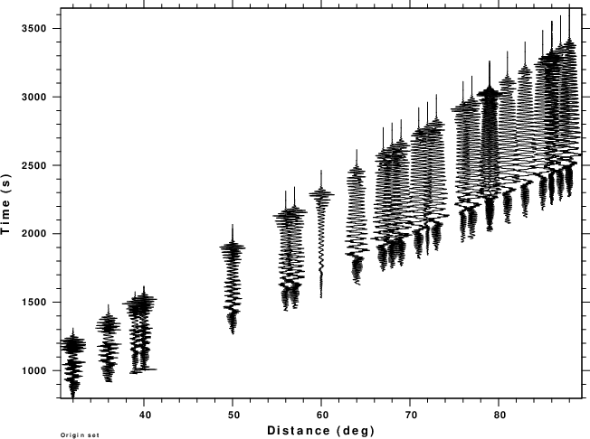 | 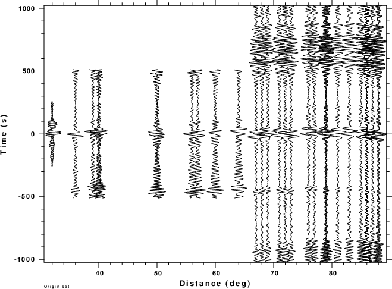 |
| Envelopes of compressed signal (relative scaling) | Envelopes of compressed signal (absolute scaling) | Normalized stack of envelopes |
| 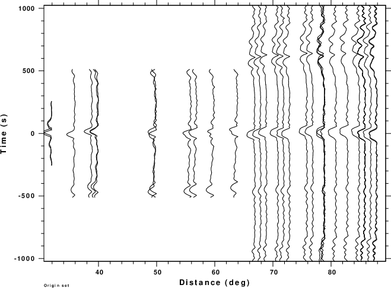 | 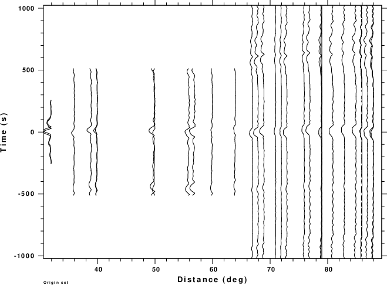 | 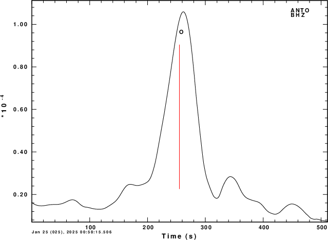 |
This follows the execution of the DOSEARCH script. The resultant stacked envelopes will be Sac files with names such at END_1_-2.stk, which corresponds to a trial source with latitude of 1° and longitude of -2°. For plotting of the peak value, the shell script DOENVPLT is run. This script writes the header values EVLA, EVLO, DEPMAX and TIMMAX onto the file env.txt, determines the maximum stack value, and then normalizes the stack values to create the file envnorm.txt. Finally a simple plot is made which is shown here.
For this run the loops in DOSEARCH cover the range -4.5 to 4.5 in latitude, -4.5 to 4.5 in longitude in increments of 0.5 degree. The simple plot shows stacked envelope amplitudes for the rectangular region -5 to 5 in latitude and -5 to 5 in longitude. Red is the maximum stack value of 1.0 and blue is the stack value of 0.0
| 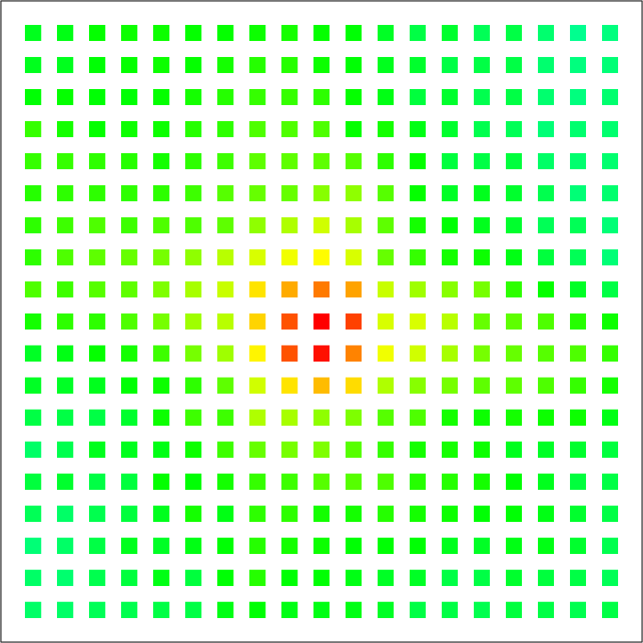 |